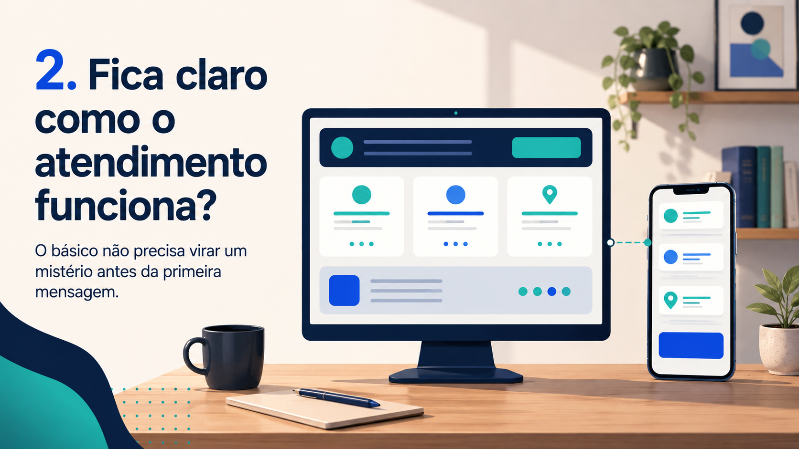

Guia para psicólogos
Seu perfil profissional responde o básico?
Antes de buscar mais alcance, vale revisar a experiência de quem já encontra você.
Em poucos segundos, uma pessoa consegue entender quem você é, como atende e como iniciar uma conversa?
Fazer a revisãoA pessoa chegou até o seu perfil. E agora?
Chegar até você não elimina as dúvidas antes da primeira mensagem.
Uma indicação, uma busca no Google ou um post podem levar alguém até o seu perfil. Mas, antes de iniciar uma conversa, a pessoa tenta entender se aquele atendimento faz sentido para ela.
Quem é o profissional, como funciona a conversa inicial e qual é o caminho para entrar em contato? Quando essas respostas estão claras, a presença digital deixa de ser apenas uma vitrine e passa a ser uma apresentação mais respeitosa e fácil de navegar.
A questão não é convencer alguém. É não criar dúvida onde poderia existir clareza.
Checklist prático
Três perguntas para revisar hoje.
Abra seu perfil no celular como se fosse uma pessoa chegando pela primeira vez.
01
Fica claro com quem a pessoa vai falar?
Uma apresentação breve não precisa contar toda a trajetória profissional. Ela só precisa ajudar a pessoa a se localizar.
- Nome pelo qual você atende
- Foto profissional atual e coerente
- Área de atuação ou temas que apresenta
- Informações confirmadas sobre sua atuação
Não se trata de transformar o perfil em currículo. Trata-se de evitar que a pessoa precise adivinhar o básico antes de decidir se entra em contato.
02
Fica claro como o atendimento funciona?
Não é necessário antecipar uma conversa clínica nem publicar informações que dependem de avaliação individual. Mas alguns pontos básicos podem estar claros:
- Atendimento online, presencial ou ambos
- Cidade ou região, quando houver atendimento presencial
- Como funciona o primeiro contato
- Onde confirmar horários, disponibilidade e demais detalhes
Clareza não significa excesso de informação. Significa mostrar o suficiente para que a pessoa entenda qual é o próximo passo.

03
Fica claro como iniciar uma conversa?
O caminho de contato pode ser WhatsApp, formulário, link de agendamento ou outro canal definido por você. O importante é que ele esteja visível, funcione e corresponda ao que foi informado.
- O botão ou link está fácil de encontrar
- O canal abre corretamente no celular
- A mensagem inicial explica o que a pessoa pode fazer
- As informações do perfil e da página não se contradizem
Um próximo passo claro não pressiona ninguém. Só facilita a escolha de conversar.
O limite importante
Clareza digital não substitui trabalho clínico.
Um perfil organizado pode tornar a apresentação mais clara, facilitar a localização de informações e reduzir dúvidas antes do primeiro contato.
Mas ele não substitui formação, escuta, ética profissional, avaliação individual, vínculo terapêutico ou qualidade do trabalho clínico.
Revisão em 10 minutos
Comece pelo ponto que gera mais dúvida.
Sem buscar demais, você consegue responder: quem é o profissional, como funciona o atendimento e como iniciar uma conversa?
Se alguma resposta depende de procurar muito, pedir informação básica ou abrir vários links, há uma oportunidade simples de organização. Não é necessário mudar tudo de uma vez.
Leitura inicial
Seu perfil está fácil de entender?
Uma leitura externa pode revelar dúvidas simples antes do primeiro contato.
Pedir uma leitura inicial A leitura é sobre clareza da presença digital. Não avalia prática clínica, resultados terapêuticos ou informações que não estejam publicamente disponíveis.